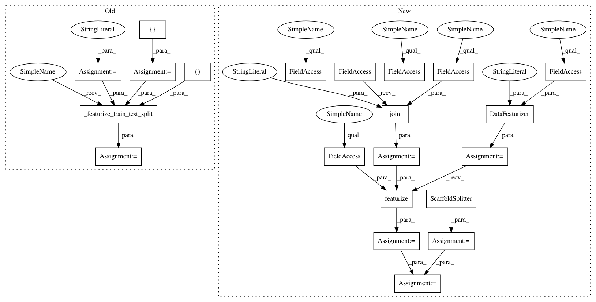

4a1b752726028f02bd04fc7b766b048a859e7f97,deepchem/models/tests/test_api.py,TestModelAPI,test_singletask_keras_mlp_USF_regression_API,#TestModelAPI#,185
Before Change
def test_singletask_keras_mlp_USF_regression_API(self):
Test of singletask MLP User Specified Features regression API.
from deepchem.models.keras_models.fcnet import SingleTaskDNN
splittype = "scaffold"
featurizers = []
input_transformers = [NormalizationTransformer, ClippingTransformer]
output_transformers = [NormalizationTransformer]
feature_types = ["user_specified_features"]
user_specified_features = ["evals"]
tasks = ["u0"]
task_type = "regression"
task_types = {task: task_type for task in tasks}
model_params = {"nb_hidden": 10, "activation": "relu",
"dropout": .5, "learning_rate": .01,
"momentum": .9, "nesterov": False,
"decay": 1e-4, "batch_size": 5,
"nb_epoch": 2, "init": "glorot_uniform",
"nb_layers": 1, "batchnorm": False}
input_file = "gbd3k.pkl.gz"
protein_pdb_field = None
ligand_pdb_field = None
train_dataset, test_dataset, _, transformers = self._featurize_train_test_split(
splittype, featurizers,
complex_featurizers, input_transformers,
output_transformers, input_file, tasks,
protein_pdb_field=protein_pdb_field,
ligand_pdb_field=ligand_pdb_field,
user_specified_features=user_specified_features)
model_params["data_shape"] = train_dataset.get_data_shape()
regression_metrics = [Metric(metrics.r2_score),
Metric(metrics.mean_squared_error),
Metric(metrics.mean_absolute_error)]
After Change
"nb_epoch": 2, "init": "glorot_uniform",
"nb_layers": 1, "batchnorm": False}
input_file = os.path.join(self.current_dir, "gbd3k.pkl.gz")
featurizer = DataFeaturizer(tasks=tasks,
smiles_field=self.smiles_field,
featurizers=featurizers,
verbosity="low")
dataset = featurizer.featurize(input_file, self.data_dir)
splitter = ScaffoldSplitter()
train_dataset, test_dataset = splitter.train_test_split(
dataset, self.train_dir, self.test_dir)
input_transformers = [
NormalizationTransformer(transform_X=True, dataset=train_dataset),
ClippingTransformer(transform_X=True, dataset=train_dataset)]
In pattern: SUPERPATTERN
Frequency: 3
Non-data size: 21
Instances
Project Name: deepchem/deepchem
Commit Name: 4a1b752726028f02bd04fc7b766b048a859e7f97
Time: 2016-05-29
Author: bharath.ramsundar@gmail.com
File Name: deepchem/models/tests/test_api.py
Class Name: TestModelAPI
Method Name: test_singletask_keras_mlp_USF_regression_API
Project Name: deepchem/deepchem
Commit Name: ee2bc2a8daaba5717e49917831ddf8229d1ebe70
Time: 2016-05-30
Author: bharath.ramsundar@gmail.com
File Name: deepchem/hyperparameters/tests/test_hyperparam_opt.py
Class Name: TestHyperparamOptAPI
Method Name: test_singletask_sklearn_rf_ECFP_regression_hyperparam_opt
Project Name: deepchem/deepchem
Commit Name: 4a1b752726028f02bd04fc7b766b048a859e7f97
Time: 2016-05-29
Author: bharath.ramsundar@gmail.com
File Name: deepchem/models/tests/test_api.py
Class Name: TestModelAPI
Method Name: test_singletask_sklearn_rf_RDKIT_descriptor_regression_API
Project Name: deepchem/deepchem
Commit Name: 4a1b752726028f02bd04fc7b766b048a859e7f97
Time: 2016-05-29
Author: bharath.ramsundar@gmail.com
File Name: deepchem/models/tests/test_api.py
Class Name: TestModelAPI
Method Name: test_singletask_keras_mlp_USF_regression_API